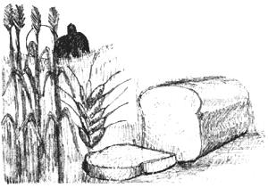
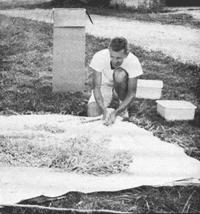
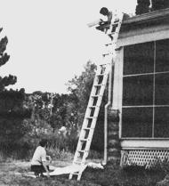

Nearly everyone, it seems, now wants to recapture some of the joys and values of "the food old days". Here's how one Wisconsin family satisfies that desire.
I grew up on a 127-acre farm and, for that reason, the little 1/7-acre field next to our house sometimes seems pathetically small to me. Even though it is tiny, however, that plot of earth plays an important role in my family's life. For it's there that we (my husband, myself, and our three children) raise our year's supply of wheat!
The ritual begins at the end of each summer when we haul buckets and barrow loads of manure from the neighboring cow pasture to our mini-field. Along with some old henhouse bedding (generously donated by a nearby chicken farmer), we spread the fertilizer on the ground . . . and then wait eight or nine months for the rich nutrients to percolate down into the soil. By the following May, we're ready to sow wheat.
The first time we planted, we did it by hand . . . which meant throwing out big, sweeping fistfuls of grain (and trying afterwards-with little success-to even up the seeds' distribution with a rake). Since then, we've mechanized. Now-with the aid of a wooden, hand-operated broadcaster-one of us can simply walk back and forth across the field and (by turning a crank) scatter seeds evenly on its surface.
And that's the signal for the beginning of a race between us and the birds: We must cover the little grains of wheat before the feathered robbers can eat them! (To speed this part of the job we do use a rototiller but, no matter how mechanized we get, we'll never resort to chemical fertilizers, pesticides, or herbicides.)
Next comes the hard part. The three months of waiting . . . and waiting. We cast an expectant eye at the field each time we walk by on the way to the mailbox or the school bus. We peer at that seemingly lifeless soil. We squint and we stare at that dirt. And then-at last-the Big Day arrives when one of us announces, "The wheat is up!"
Those four magic words transform us, during the followi ng weeks, into miniature copies of "real" wheat farmers. We critically analyze the ratio of weeds to our developing crop. We speculate about whether or not it'll be a bad year for grasshoppers. We take our farming as seriously as if our livelihood depended upon it.
With August comes the hot, dry days and nights that are so essential to the ripening of wheat here in Wisconsin. These are the days when we can stand and almost watch the plump heads of grain turn golden brown under the sun's scorching rays. (When the air is still, you can-if you listen closely-hear faint noises as the heads dry.)
Finally, the kernels of wheat have ripened to the point where-if you bite down on them-they'll crunch between your teeth. It's "thrashin' " time.
We encourage all able-bodied family members to join in the harvest, which means-usually-that we have a work crew consisting of two willing parents and three reluctant children. ("Never mind their protests," we tell ourselves. "Their memories will be rich.")
As strange as it may seem to "real" farmers, we don't harvest our wheat with a combine. (The patch is too small and, anyway, when we tried a combine once our grain was presented to us liberally mixed with weed seeds, stones, and dismembered insects.) Nor do we cut the stalks of wheat with a scythe, sickle, or cradle (a scythe fitted with a light frame that makes whatever is being cut lie down evenly).
What we do is we each take a cardboard box out into our mini-field and we hand pick the heads of wheat right off their stalks. This doesn't take as long as you might think . . . and it leaves all the weed seeds, pebbles, and random pieces of grasshopper back in the field where they belong.
After the wheat is picked, it, of course, must be threshed. We like to spread a clean sheet on the garage floor, lay out the heads we've gathered on the linen, and then shatter them by beating the heads with a bamboo rod or an old broomstick. Striking the wheat repeatedly and forcefully is a grand way to work off pent-up frustrations, as more than one guest has discovered. (We often invite friends and relatives to share in the fun.)
Next, it's time to winnow out the grain. We wait for a special sort of day to winnow . . . a day with just a little-but not too much-wind. One of us then carries the shattered heads of wheat up a ladder to the porch roof, while the others spread a sheet on the ground below. Then-carefully, in such a way that the chaff catches the wind (while the grain doesn't!)-the threshings are poured down onto the sheet. The process is repeated until the nuggets of grain that we catch on the ground are almost entirely free of broken stems and seed husks.
Naturally, this primitive technique isn't 100% efficient: some wheat is carried downwind with the chaff (to be eaten shortly thereafter by a circle of waiting birds) . . . and a certain irreducible amount of debris remains with the grain. No problem. Whenever I go to a meeting or a friend's house I just take along a tin of wheat (in place of knitting) and spend my idle time picking out the bits of chaff left in the wheat.
After this "final cleaning", the grain is ground in our electric mill or cracked in a handcranked grinder. And what delicious breads, what hearty cereals our home-grown-and-ground wheat makes! Each toothsome mouthful is rich in nutrition . . . and steeped in memories. Memories of blistering sun and soothing rain . . . of green waves undulating in the wind . . . of the feel in your palm of golden wisps of crackling-dry grain . . . and of the joy of family closeness in a common task.
These are the aspects of "the good old days" that seem to us to be worth recapturing. And-thanks to our tiny, 1/7-acre patch of wheat-we do recapture them.
|
 To release the seeds from theirhusks, the fresh-picked heads ofwheat are beaten repeatedly with abamboo stick. |
 Next, the grain is winnowed. Most?but not all?of the chaff is blown away as threshed wheat is poured from roof. |
 |